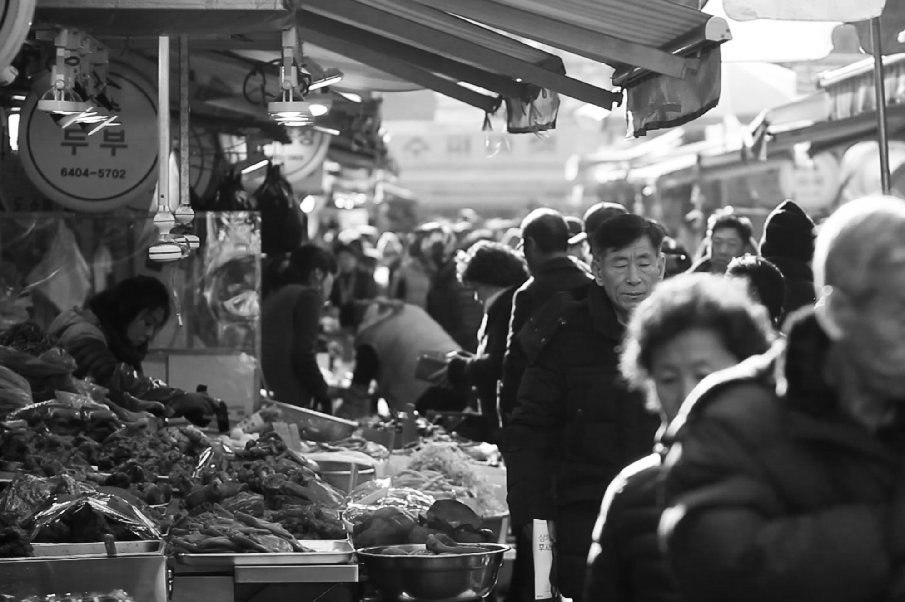
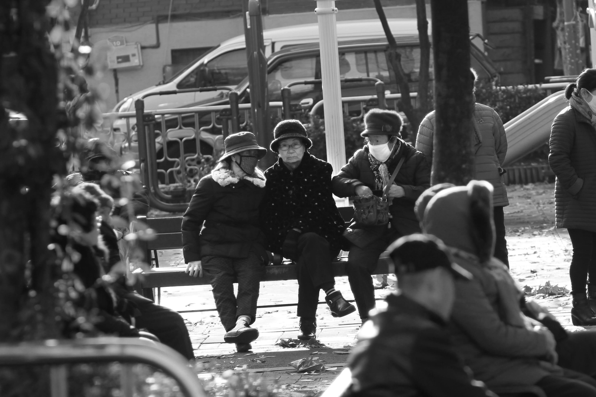
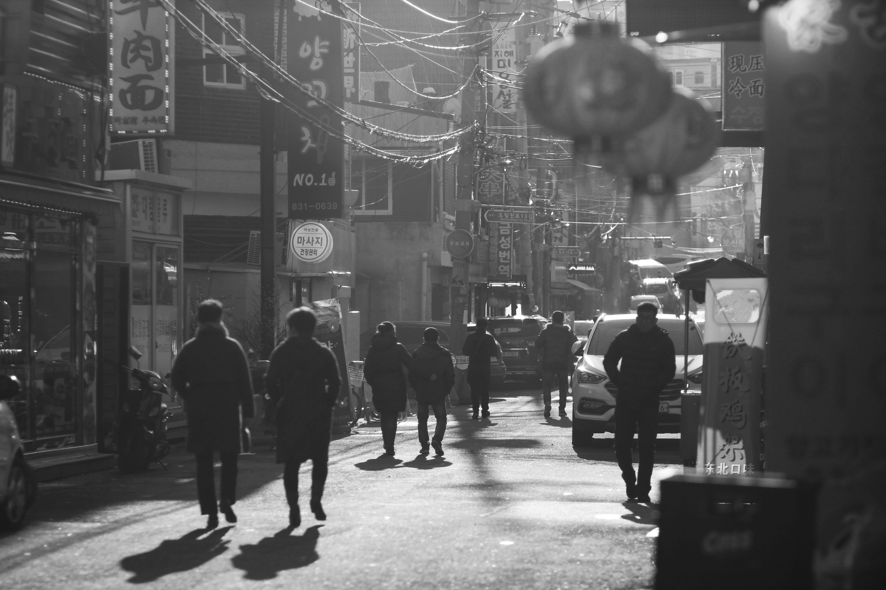

projects which aim to document lifeworlds
linked entries ⤳
Joseonjok of Daerim-dong, Seoul
You can find a video of Daerim-dong here
In determining which path to take my listeners on, I first thought about my first impressions of Daerim-dong. Secondly, I engaged in a quite thorough literature review of academic papers and news articles about the Joseonjok, Daerim- and Garibong-dong and the Korean diasporas. Thirdly, I went to Daerim-dong again and did a series of thorough observations of the social life and objects located at different potential paths that I could take my listeners on. Lastly, I found the ideal path in which I could tell an engaging story and connect my story to objects and people in the city all while staying focused on the key issues pertaining to the identity and historic challenges experienced by Joseonjok and South Koreans.
I designed the tour for people who are somewhat knowledgeable of East-Asian history and have a basic English academic language. I assume that they know about the Japanese colonisation of South Korea and the subsequent invasion of Manchuria. I assume that they will understand when I use common academic terms such as industrialisation, narratives and ethnicity. I think English speaking Koreans and foreigners alike will find the tour valuable, engaging and thought-provoking.

As I speak very little Mandarin and Korean I found it challenging to build a whole tour without being able to easily engage orally with any of the Joseonjok Korean Chinese or South Koreans that my tour is about. A classmate of mine, Xiaofan Liang, helped me a bit by going with me, reading what the signs said and chatting casually with some people. Many of my resources are done by Korean or Asian scholars. Still, the greatest ethical shortcoming is the lack of Korean Chinese or South Korean voices narrating and being present in the tour. If I were to change something or improve my tour I would want to try to find a Korean Chinese to co-host the tour with me. I would try to include many more personal stories which I would get access to by knowing and interviewing the Joseonjok who live in Daerim-dong.
Despite this clear shortcoming, I think the wealth of resources I did have access allowed me to frame and support my argument very well. The struggles of identity Joseonjok, South and North Koreans are experiencing are grounded in historical events such as the Japanese invasion of Manchuria, the Cold War and the recent success of South Korea as an Asian tiger economy. The mechanisms at work in Korean questions of identity can also be found in Japan, Greece and Germany which historically have had large ethnic populations outside of their own borders.
Based on these insights I decided that It would be very valuable to see the Chinatown of Daerim-dong and its Joseonjok population as a manifestation of, to some degree, universal struggles of identity which are experienced currently in different places throughout the world.[1] The particular story of Daerim-dong allows us to situate our discussion in the local. It allows the uninformed listener to better understand how large-scale processes such as the Cold War or South Korean industrialisation might impact different groups and nurture the creation of spaces and neighbourhoods.[2]
The guided, app-based tour format allows me as a producer accurately time and synchronises a spatial and auditory experience. For me, the combination of the spatial and the auditory allow me to explain well the space in which an individual is situated. You can explain how different forces worked to produce the physical and spatial reality the individual is engaging with while experiencing the tour. In my tour, this allowed me to show how abstract concepts like ethnicity, nationality and power manifest and influence the creation of a Korean Chinese enclave close to the heart of Seoul in South Korea. The fact that this tour is [3] digital makes it available to many more people than if I had been giving a tour in person.
Detour studio is not that easy to use and that impacts who might end up using the tool. Like other digital or computational tools, Detour limits it userbase in being difficult to use. Another limitation of this style is the lack of potential for listeners or the local population to build on and expand the existing tour. If the local population would be unhappy with the tour I have created, they are not in a great position to contribute or make their voices heard.[4]

I think the identity issues the I explore in my narrative could be a textbook case of historicity. It goes like this: A population of a culture is split into two. Each is put on one of two sides in the Cold War. One half is put in a communist country with limited contact with consumer market societies. The other is fully integrated into the capitalist global market. Then, you observe the conflicts that arise as diverse groups try to negotiate the meaning of a culture, nation and ethnicity to which they all relate and feel ownership of.[5] It is not that one is more representative I think. Nothing is constant throughout history, both populations have the same heritage down the line but have developed in different ways in recent times. In our case, you have South Korea on one side with more than 40 million people versus Korean Chinese who amount to less than 4 million people. The Korean Chinese are the subaltern.

They have been silenced as South Korea has grown economically successful and gained prominence internationally. [6]
Particularly interesting is how some South Koreans claim that Korean Chinese have digressed from the true Korean path. South Koreans claim this while rarely being aware of how much they themselves have changed in the last 70 years...
[1] I use the concept of hierarchical nationhood to describe how Korean Chinese are respected more than foreigners and much less than citizens in South Korea. Using frameworks such as these helps us understand the intricacies of the power struggle between different agents while we investigate the nature of Korean historical identify.
[2] Recent newspaper articles helped me understanding how Daerim-dong is portrayed currently in mainstream Korean media. There were many examples of how discrimination manifests in popular media. Academic and historical papers on the Chinese diaspora, and case studies featuring interviews with korean Chinese in particular, played a vital role in cementing the core arguments that are brought forward in the tour.
[3] The media tools which come with digital history allows historians to better exemplify and explain abstract concepts to a less historically oriented audience. The audio tour format creates a strong link between my historical arguments and the place and people it is about. It allows for the creation of experiences which delicately interleave the past with a current reality.
[4] Though the audio tour tool is very empowering to me as a creator I have little opportunity to involve my listeners. There is not space for communities and individuals to develop and critique the tour I made. This might be a barrier to actively engaging the public with history.
[5] Coming to Daerim-dong you don’t realize the very complex issues facing the Korean Chinese community. I manage to get at the many historical ruptures one can find in Korean identity and start explaining how they impact a neighbourhood and a people trying to return to their original homeland.
[6] I describe the current hegemony of the South Korean state at several points during the tour. My difficulty of findings sources speak to the Joseonjok's lack of visibility and voice internationally.
There is a lack of documentaries which do not exoticise rickshaw drivers nor depict them as inferior or poor. Our documentary project aimed to capture the lives of rickshaw driver families in an honest way.
This project was conducted by three filmmakers (including me) and two Hyderabadi locals. We did not immediately define what the documentary would be about but focused on building good relationships with four rickshaw driver families. I was one of the cameramen capturing the environment whenever we went out to visit one of the families. I also supported our local collaborators when we were conducting interviews. By going through this process, we were able to capture the unique stories of each family: their backstories, duties, and dreams.

During post-production, I was part of the three-person core team responsible for finding the story and editing everything together.